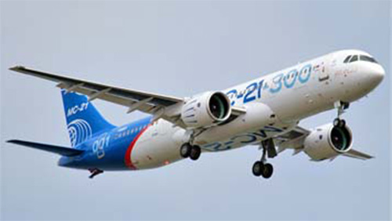

MC-21

- Разработчик: ОКБ Яковлева, Иркут
- Страна: Россия
- Первый полет: 2017
- Тип: Среднемагистральный пассажирский самолет
МС-21 — это российский среднемагистральный узкофюзеляжный пассажирский самолёт, разработанный корпорацией «Яковлев». Он предназначен для перевозки пассажиров на расстояния до 6400 километров.
МС-21 имеет двухдвигательную силовую установку и крыло с высокой степенью механизации. Самолёт выполнен с применением современных технологий и материалов, что обеспечивает его надёжность и экономичность.
Первый полёт МС-21 состоялся 28 мая 2017 года. В настоящее время самолёт проходит лётные испытания и сертификацию.
| Летно технические характеристики | |
|---|---|
| Модификация | MC-21-300 |
| Размах крыла максимальный, м | 35.90 |
| Длина, м | 41.50 |
| Высота, м | 11.50 |
| Площадь крыла, м2 | 150.0 |
| Масса, кг | |
| - пустого самолета | |
| - нормальная взлетная | 79250 |
| Тип двигателя | 2 ТРДД Pratt & Whitney PW1428G (ПД-14) |
| Мощность, кгс. | 2 х 140 (137) |
| крейсерская скорость, км/ч | 870 |
| Практическая дальность с 1300 кг груза, км | 6000 |
| Практический потолок, м | |
| Экипаж, чел | 2 |
| Полезная нагрузка: | пассажиров в одноклассной компоновке - 181, в двухклассной компоновке - 163 или коммерческая нагрузка максимальная 22600 кг |